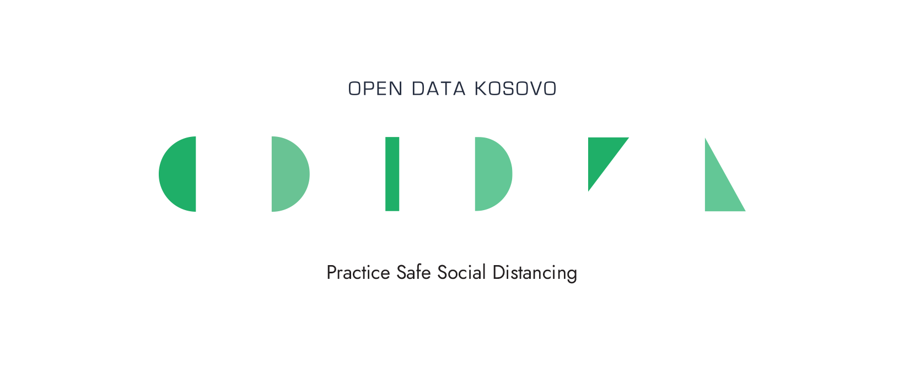

Open Data Kosovo
Open Data Kosovo is a nonprofit organization that believes in using civic-tech and digital humanitarianism to open government. Our initiative promotes the idea that governance data should be made freely available for everyone to use and republished as they wish, without restrictions from copyright, patents or other mechanisms of control.
We contribute to the development of a local and vibrant tech scene. By working as a lab that provides mentorship and training programs, we engage local software developers and help build a community around the use of nascent and enabling technologies to develop apps for social good with Kosovo’s open data.

Techstitution 4.0
We have officially started the online training of the newest edition of Techstitution project. With participants from Gjilan, Gjakove, Dragash, Zubin Potok, and Lipjan the first group has started their online training journey.
In total 180 youngsters will receive hands-on training on the development of basic coding skills to further contribute in the positive development of the society!
*Techstitution 4.0 is a project funded by Unicef Kosovo Programme and Austrian Development Agency and implemented by Open Data Kosovo.
We have officially started the online training of the newest edition of Techstitution project. With participants from Gjilan, Gjakove, Dragash, Zubin Potok, and Lipjan the first group has started their online training journey.
In total 180 youngsters will receive hands-on training on the development of basic coding skills to further contribute in the positive development of the society!
*Techstitution 4.0 is a project funded by Unicef Kosovo Programme and Austrian Development Agency and implemented by Open Data Kosovo.
This website's purpose is to help people manage their time during this pandemic, focus in their self-care by paying more attention to their health and food, and also have fun by exploring new acvities such as workouts,meditation and different hobbies.
- Open Data · We are committed to increasing knowledge and usage of open data to support data-driven decision-making, policy-making, and process optimizations in day to day strategies.
- Capacity Building · We have trained more than 1000 tech and open data enthusiasts coming from different sectors and guided them to better skills development.
- Digital Transformation · We develop digital solutions for local and international partners, coming from NGO, public and private sector aiming to increasing efficiency.
- Community · We are sharing our space with individuals and initiatives who are excited as us about the development of the tech scene and digital transformation in Kosovo and worldwide.